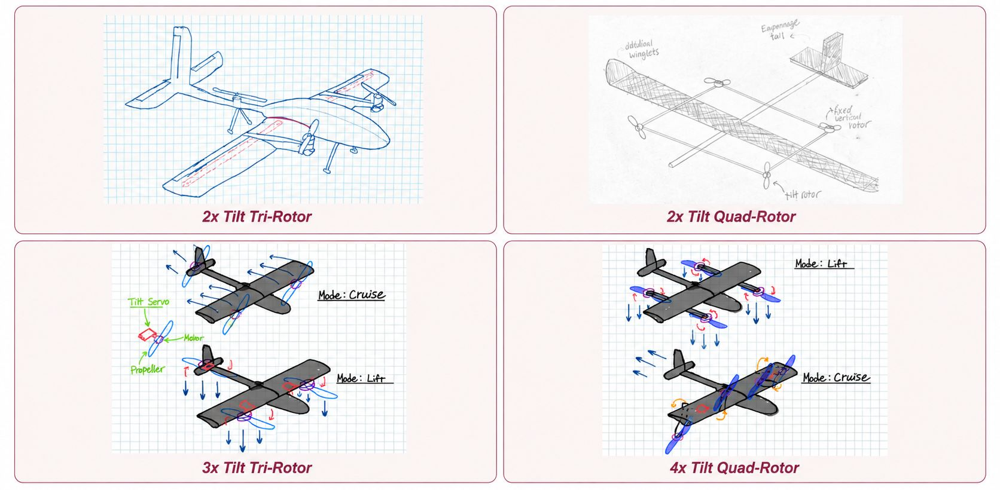
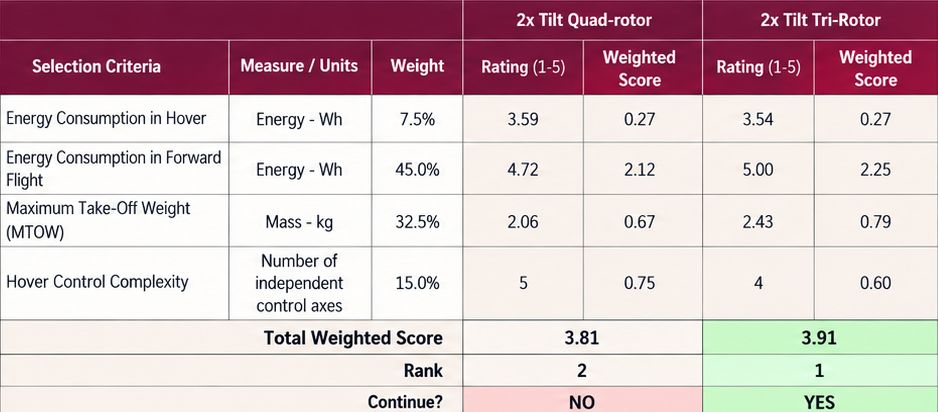
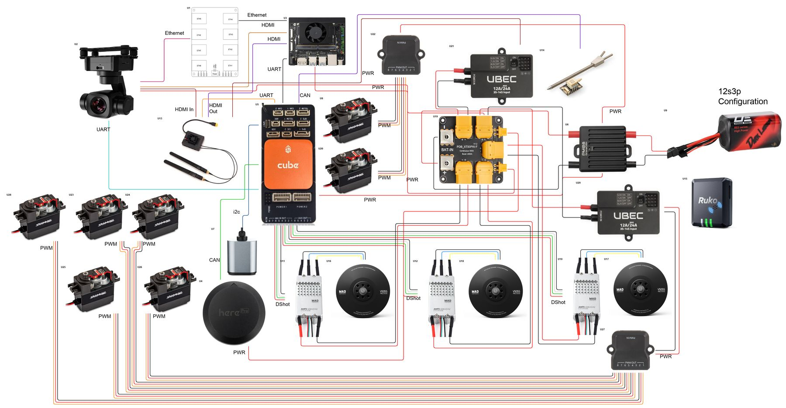

My part
On a seven-person team, I'm on structures and manufacturing, and pitch in on propulsion sizing, electronics and prototyping.
- Calculated hover and cruise energy estimates for the 4+1, 2x-tilt quad-rotor, and 2x-tilt tri-rotor configurations, built on the mission profile; they drove the concept down-select
- Ran trade studies and analyzed manufacturing methods for the wing
- Designed the full electrical wiring diagram for the aircraft
- Building a model of the aircraft to run SITL simulations
- Presented our preliminary design review to stakeholders
- Next: the critical design review in December, with a functioning tilt mechanism prototype
- Wingspan
- 2.36 m
- Aspect ratio
- 9.8
- Estimated MTOW
- 20–23 lb
- Mission target
- 30 mi + 4 min hover
- Battery
- 12S3P Li-ion, 648 Wh


